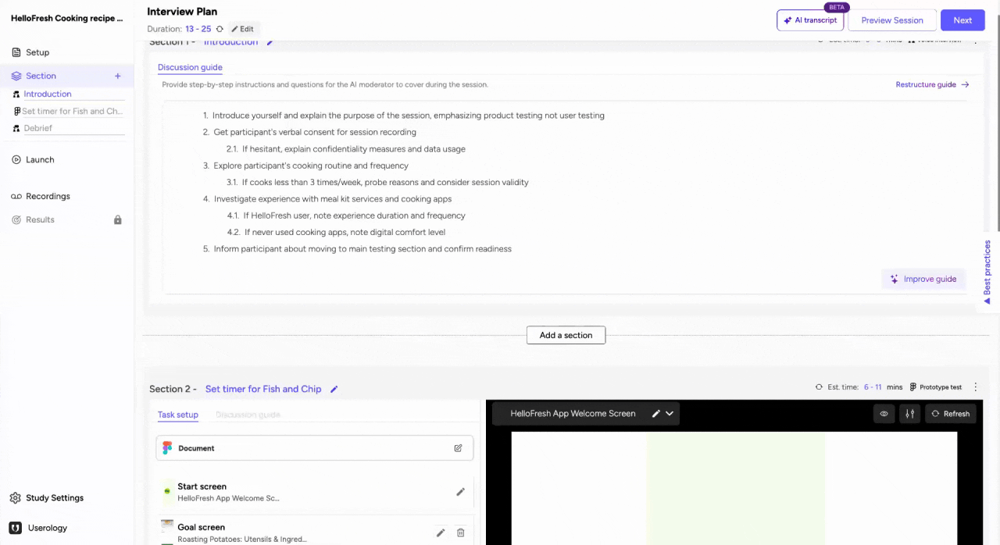
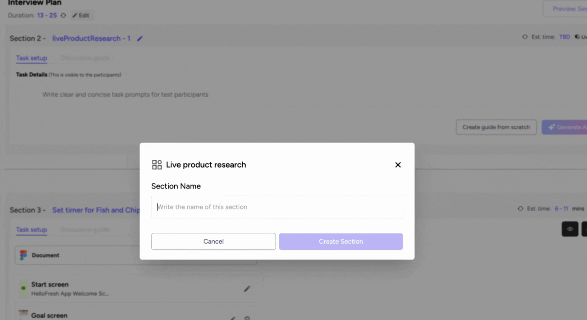
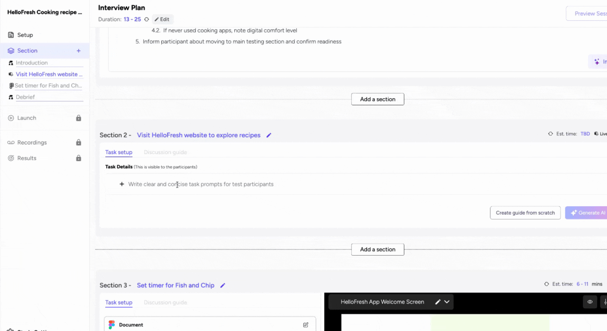
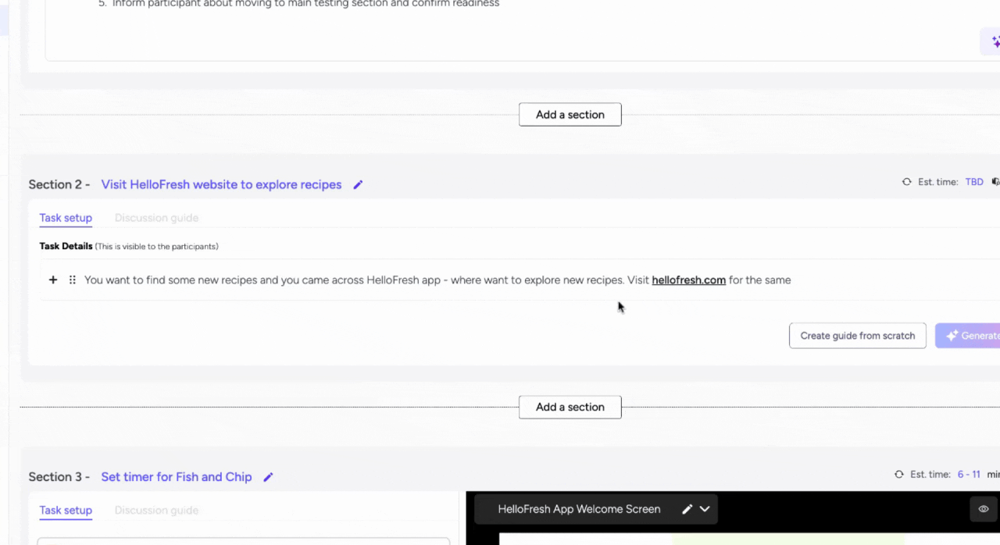
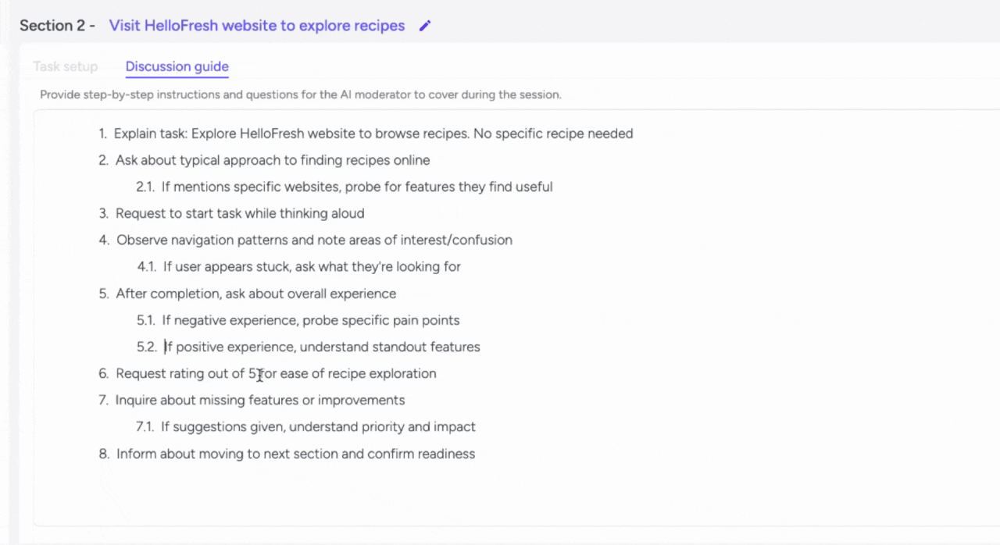

The Live Product Research section in Userology is a powerful feature that enables you to create tasks for participants to perform on live web or mobile applications. This guide will walk you through the process of setting up this section, defining tasks, generating an AI discussion guide, modifying the guide, and troubleshooting any issues that may arise.
Key Steps Overview
To set up a Live Product Research section in Userology, follow these key steps:
-
Add a Live Product Research Section.
-
Define the Section Name.
-
Set Up the Task.
-
Generate an AI Discussion Guide.
-
Modify the Discussion Guide.
Each step is designed to help you create a seamless and effective research experience for your participants. Below, we provide a detailed guide for each step, along with tips, considerations, and explanations of their importance.
Detailed Step-by-Step Guide
Step 1: Add a Live Product Research Section
-
Click on 'Add a Section' or use the plus icon on the left navigation bar to create a new section.
-
You can insert this section between any two existing sections.
What to consider: Decide where this section fits best within your study to maintain a logical flow.

Step 2: Define the Section Name
-
Provide a name for the section that clearly describes its purpose. For example, 'Visit Hello Fresh website to explore recipes.'
-
A clear and descriptive name helps participants understand the purpose of the section at a glance.

Step 3: Set Up the Task
-
Enter the task details that will be visible to the participant. Ensure the instructions are clear and concise.
-
Clear task instructions improve participant engagement and ensure accurate data collection.
-
Avoid overly complex or ambiguous instructions to prevent participant frustration.
Note: The task is customizable and can include list(ordered/unordered), code block, table, headings

Step 4: Generate AI Discussion Guide
-
Click on 'AI Generation Guide' to initiate the AI thinking process.
-
The AI will use the study objective and persona to understand the scope of the live product research and draft a set of questions and then priortise the right question in the guide.
Why it is useful: The AI-generated guide saves time and provides a solid starting point for your discussion framework.

Step 5: Modify the Discussion Guide
-
The AI-generated guide is fully customizable. You can adjust the rating scale, modify questions, or make any other necessary changes to suit your research needs.
-
Customization allows you to tailor the guide to your unique research requirements.
-
Ensure that the modifications maintain the clarity and relevance of the questions.

If you have any questions or need further assistance, feel free to reach out to us at support@userology.co Happy researching!